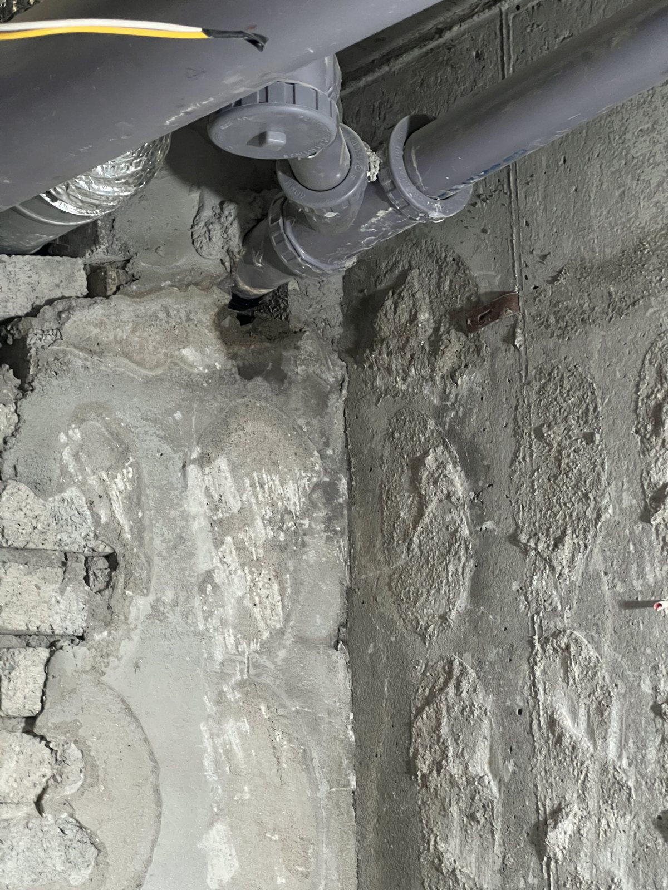
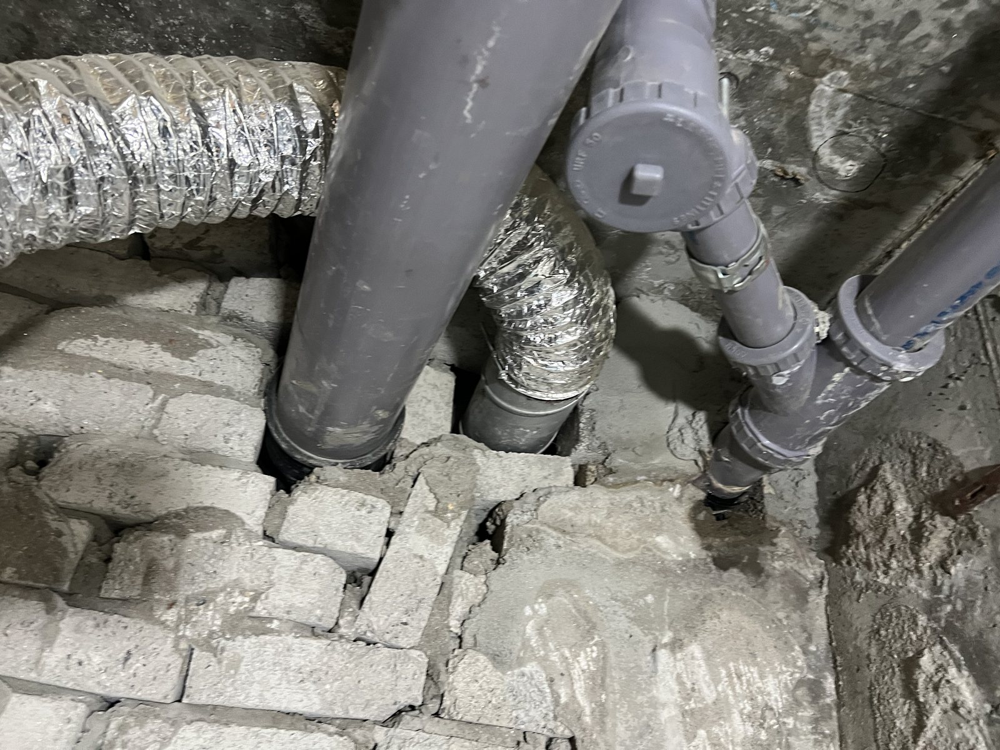
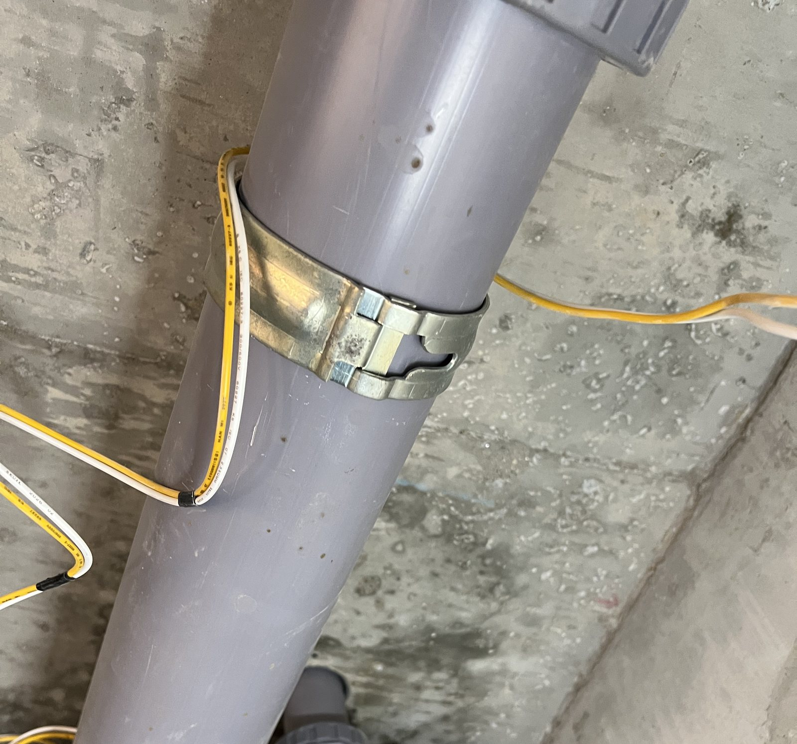
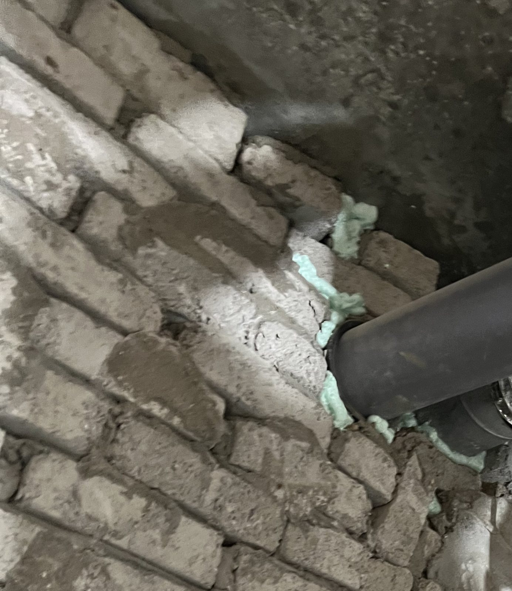

대전 목동 목양마을아파트 세면대 배관 공사｜천장 속 배수관 연결부 작업과 관통부 마감

현장 작업 한눈에 보기
- 현장
- 목동 목양마을아파트 · 세면대 배관
- 문제
- 천장 안쪽 세면대 배수 배관 연결부
연결부 둘레 얼룩 - 작업
- 배관 연결부 작업
배관 고정 상태 확인
벽 관통부 폼으로 메우기 - 결과
- 작업한 연결부와 폼 마감 사진 확인
통수 결과·소요시간은 미기재
대전 중구 목동 목양마을아파트 세면대 배관 공사입니다. 천장 안쪽의 세면대 배수 배관 연결부를 작업하고, 배관 고정 상태를 살핀 뒤 배관이 벽돌 벽을 지나는 틈을 폼으로 메웠습니다. 실제 사진 5장으로 소개합니다.
1. 작업 전 배관 연결부
대전 중구 목동 목양마을아파트에서 세면대 배관 공사를 했습니다. 2026년 11월 10일 아침 사진을 순서대로 소개합니다.
천장 안쪽에서 배관이 위쪽 바닥판으로 들어가는 연결부입니다. 연결부 둘레에 얼룩이 보였습니다. 아파트 욕실 배수관은 바닥판을 지나 아래층 천장 안쪽으로 이어지는 경우가 많아, 세면대 배관을 손볼 때 천장 속에서 작업하기도 합니다.

2. 벽돌 위로 지나는 배관들
같은 천장 안쪽입니다. 배수 배관 여러 개가 벽돌 칸막이 위로 지나갑니다. 여러 관이 모여 있는 자리라 작업할 관을 먼저 확인합니다.

3. 작업 중 연결부
세면대 배관 연결부를 작업하는 중의 모습입니다. 연결부는 관과 관이 이어지는 자리라, 이음 상태가 배수와 누수에 바로 영향을 줍니다.
4. 배관 고정 상태
배관을 잡아 주는 금속 고정 밴드 자리도 함께 살폈습니다. 배관이 흔들리지 않게 잡혀 있어야 연결부에 힘이 덜 갑니다.

5. 벽 관통부 메우기
배관이 벽돌 벽을 지나는 틈은 폼으로 메웠습니다.

6. 확인한 범위와 상담 안내
이번 기록은 사진과 일정 기록으로 확인되는 범위입니다. 바꾼 부속 이름, 통수 결과, 작업 시간은 자료가 없어 적지 않았습니다.
욕실 천장에서 물이 떨어지거나 세면대 아래 배관 둘레가 젖어 있으면, 천장 점검구 안쪽과 물 자국, 세면대 아래 배관을 함께 찍어 상담해 주세요.